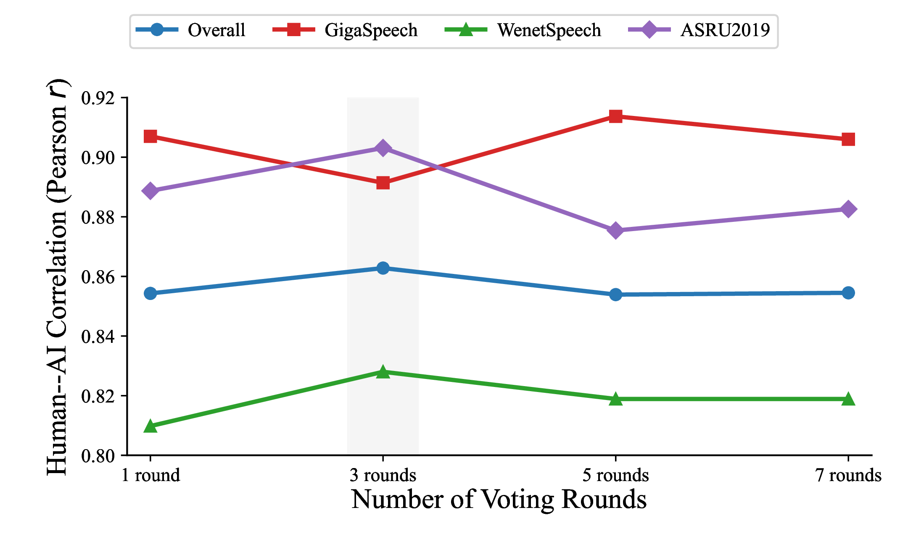
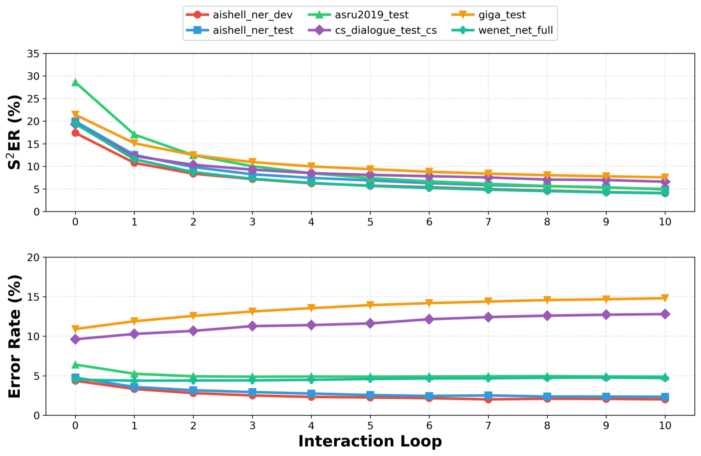

One-shot ASR is not enough
Conventional recognition treats every utterance independently, which makes post-hoc recovery of important mistakes awkward and brittle.
Project Homepage
X-LANCE Lab, Shanghai Jiao Tong University · Xi'an Jiaotong University · CUHK-Shenzhen · Fudan University · Alibaba Group
This is the canonical homepage for the Interactive ASR paper line. The current figures, method description, and benchmark highlights are synchronized to the latest TMM version.
Interactive ASR turns one-shot recognition into a closed-loop refinement process. The latest Agentic ASR version combines semantic correction, intent routing, and reasoning-based editing to support multi-turn transcript repair driven by spoken user feedback. To evaluate this setting beyond token overlap, we introduce S2ER, a sentence-level semantic error metric, together with an Interactive Simulation System that automates multi-turn benchmarking at scale. Across English, Mandarin, named-entity-intensive, and code-switch benchmarks, semantic error drops rapidly within the first few loops and continues to improve consistently through later turns.
Standard ASR decodes once and stops. Interactive ASR keeps the transcript editable, so meaning-critical mistakes can be repaired with natural spoken feedback.
Conventional recognition treats every utterance independently, which makes post-hoc recovery of important mistakes awkward and brittle.
Token-level metrics often under-estimate whether a transcript is still useful for intent understanding, entities, and downstream agents.
The latest version adds S2ER and an Interactive Simulation System so multi-turn repair can be evaluated reproducibly.
Agentic ASR is a closed-loop transcription system that pairs a single-pass ASR backbone with an LLM reasoner for structured local repair.
At each interaction turn, the system first performs semantic correction on the user feedback, then routes it into confirmation, new input, or correction. When repair is required, the reasoner executes a constrained Locate → Reason → Modify process instead of unconstrained rewriting.

Sentence-level Semantic Error Rate uses an LLM judge to determine whether the current hypothesis preserves enough meaning for correct intent execution.

ISS closes the evaluation loop automatically: judge the transcript, generate corrective spoken feedback, and stop once semantic equivalence is achieved.

Interactive ASR is modeled as a stateful multi-turn update problem instead of independent speech-to-text calls.
The reasoner performs constrained local edits rather than unconstrained rewriting, which makes correction more reliable.
The current experiments cover multilingual, named-entity-intensive, and Mandarin-English code-switch scenarios.
Across all six benchmarks, semantic error drops quickly in early turns and continues to improve through longer interaction loops.
S2ER after 10 turns
Semantic error reduction
Code-switch repair under interaction
Human alignment on ASRU2019
S2ER decreases monotonically on every benchmark. The first few turns produce the largest gains, especially on GigaSpeech, WenetSpeech, AISHELL-NER, and ASRU2019.

| Benchmark | Loop 0 | Loop 1 | Loop 3 | Loop 10 |
|---|---|---|---|---|
| GigaSpeech Test | 21.47% | 12.35% | 7.00% | 3.49% |
| WenetSpeech Test_Net | 19.46% | 8.69% | 4.15% | 1.80% |
| AISHELL-NER Dev† | 17.38% | 8.45% | 4.45% | 1.97% |
| AISHELL-NER Test† | 19.91% | 9.55% | 5.47% | 2.02% |
| CS-Dialogue Test† | 19.73% | 10.83% | 6.58% | 4.16% |
| ASRU2019 Test | 28.57% | 10.32% | 3.98% | 1.36% |

Even Whisper benefits from interaction. On ASRU2019, its S2ER drops from 46.32% to 3.75% after 10 turns.

Qwen3-8B preserves the overall trend but remains behind the 32B setup, especially on precise local edits.
Majority-3 voting gives the best balance between reliability and cost, improving overall correlation from 0.8543 to 0.8628.
Representative correction loops across Mandarin, English, and code-switch speech. Each example includes the original utterance, spoken correction, and repaired transcript.
TEST_NET_Y0000000000_-KTKHdZ2fb8_S00043
Ground truth: 吴克儿待会儿去趟监控室
Error type: person name + phrase-level correction over two rounds
吴克，带我去趟办公室。
不是吴克，是吴克儿。要纠正的是待会儿去监控室，不是带我去办公室。
吴克儿，待会儿去监控室。
是去趟监控室，不是去监控室，有个趟字。
吴克儿待会儿去趟监控室
YOU1000000143_S0000123
Ground truth: SO, AFTER GETTING OBAMA AND BIDEN ELECTED, I FELT THIS POWER TRIP.
Error type: semantically important lexical confusion
So after getting Obama Biden elected, I felt this power shift.
It is not "power shift", it is "power trip", T R I P. A feeling of inflated power.
So after getting Obama Biden elected, I felt this power trip.
00117
Ground truth: 史上最厉害的 ATTENDEE 马上要出现了
Error type: Mandarin-English word substitution in a mixed utterance
史上最厉害的 Attendant 马上就要出现了。
不是 Attendant，是英文单词 ATTENDEE，A T T E N D E E，意思是参加者。
史上最厉害的 Attendee 马上要出现了
This homepage serves as the canonical landing page for the Interactive ASR project line, with the latest content anchored to the TMM version.
All methods, figures, benchmark highlights, and demo narratives on this page reflect the latest Agentic ASR iteration.
Implementation, project assets, and release materials for the public Interactive ASR codebase.
Try the online interactive speech correction system directly in the browser.
The site unifies the two-paper project line while keeping the current presentation explicitly aligned with the latest version.
If you find this project useful, please consider citing the project homepage.
@misc{jiang_interactive_asr,
title = {Towards Human-Like Interactive Speech Recognition with Agentic Correction and Semantic Evaluation},
author = {Jiang, Zixuan and Zhu, Yanqiao and Wang, Peng and Chen, Qinyuan and Zhao, Xinjian and Qiu, Xipeng and Wang, Wupeng and Gao, Zhifu and Li, Xiangang and Yu, Kai and Chen, Xie},
howpublished = {\url{https://interactiveasr.github.io/}},
note = {Canonical project page for the latest Interactive ASR / Agentic ASR version}
}